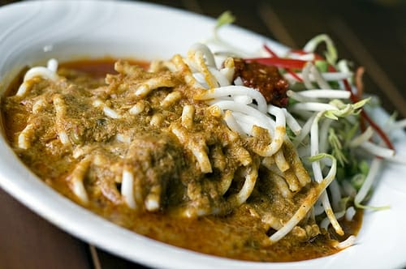

Tentang laksa Terengganu
Laksa ini dihidangkan dengan dua jenis kuah iaitu kuah mentah dan kuah masak.
Kuah mentah menggunakan santan yang tidak perlu dimasak manakala kuah masak akan kelihatan lebih kuning.
Di sini, saya akan tunjukkan cara untuk membuat laksa Terengganu dengan kuah masak
Jom kita lihat bahan-bahan yang diperlukan dan cara untuk membuatnya
Bahan-bahan yang diperlukan untuk membuat ialah:
2 sudu rempah masak cap bunga Ros
2 sudu rempah gulai cap bunga Ros
5-6 sudu cili kisar
Setengah sudu asam jawa
Setengah sudu belacan
700 gram santan
Minyak untuk menumis
1 keping nisan ( gula Melaka)
Garam dan gula secukup rasa
Bahan-bahan yang digunakan untuk mengisar ialah:
2 ulas bawang besar merah
3 ulas bawang putih
4 hiris lengkuas
4 hiris kunyit
1 inci halia
Bahan-bahan yang diperlukan untuk kuah ialah:
1 kilo ikan selayang segar direbus bersama garam dan asam keping dan diambil isinya. Isi ikan dikisar.
Mari kita lihat cara untuk membuatnya
Satukan bahan kisar bersama rempah dan cili kisar.
Tumis hingga naik minyak.
Masukkan air asam jawa dan belacan.
Masukkan santan, ikan, nisan, garam dan gula.
Masak hingga pecah minyak.
Siap dan sedia untuk dinikmati!